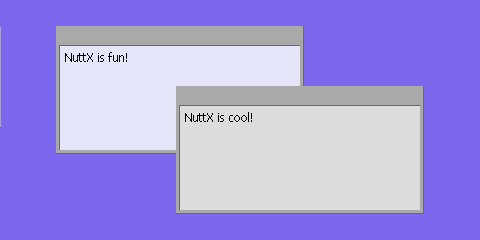
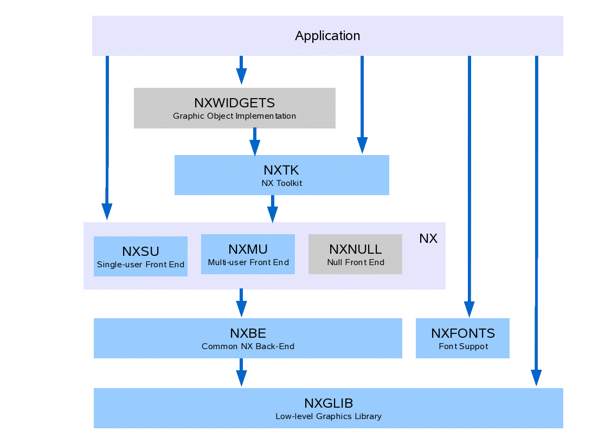

NX Graphics Subsystem
This document describes the tiny graphics support included in NuttX. It includes an overview description of that graphics support, detailed descriptions of the NuttX graphics APIs, and discussion of code organization, and OS configuration options.

Figure 1. This screnshot shows the final frame for the NuttX example
at apps/examples/nx running on the simulated, Linux x86 platform with
simulated framebuffer output to an X window. This picture shows to framed window
with (blank) toolbars. Each window has displayed text as received from the
NX keyboard interface The second window has just been raised to the top of the display.
Objectives
The objective of this development was to provide a tiny windowing system in the spirit of X, but greatly scaled down and appropriate for most resource-limited embedded environments. The current NX implementation supports the general following, high-level features:
Virtual Vertical Graphics Space. Windows that reside in a virtual, vertical space so that it makes sense to talk about one window being on top of another and obscuring the window below it.
Client/Server Model. A standard client server/model was adopted. NX may be considered a server and other logic that presents the windows are NX clients.
Multi-User Support. NX includes front-end logic to support a separate NX server thread that can serve multiple NX client threads. The NX is a server thread/daemon the serializes graphics operations from multiple clients.
Minimal Graphics Toolset. The actual implementation of the graphics operations is performed by common, back-end logic. This back-end supports only a primitive set of graphic and rendering operations.
Device Interface. NX supports any graphics device either of two device interfaces:
Any device with random access video memory using the NuttX framebuffer driver interface (see
include/nuttx/video/fb.h).Any LCD-like device than can accept raster line runs through a parallel or serial interface (see
include/nuttx/lcd/lcd.h). By default, NX is configured to use the frame buffer driver unlessCONFIG_NX_LCDDRIVERis defined =y in your NuttX configuration file.
Transparent to NX Client. The window client on “sees” the sub-window that is operates in and does not need to be concerned with the virtual, vertical space (other that to respond to redraw requests from NX when needed).
Framed Windows and Toolbars. NX also adds the capability to support windows with frames and toolbars on top of the basic windowing support. These are windows such as those shown in the screenshot above. These framed windows sub-divide one one window into three relatively independent subwindows: A frame, the contained window and an (optional) toolbar window.
Mouse Support. NX provides support for a mouse or other X/Y pointing devices. APIs are provided to allow external devices to give X/Y position information and mouse button presses to NX. NX will then provide the mouse input to the relevant window clients via callbacks. Client windows only receive the mouse input callback if the mouse is positioned over a visible portion of the client window; X/Y position is provided to the client in the relative coordinate system of the client window.
Keyboard input. NX also supports keyboard/keypad devices. APIs are provided to allow external devices to give keypad information to NX. NX will then provide the mouse input to the top window on the display (the window that has the focus) via a callback function.
Organization
NX is organized into 6 (and perhaps someday 7 or 8) logical modules. These logical modules also correspond to the directory organization. That NuttX directory organization is discussed in Appendix B of this document. The logic modules are discussed in the following sub-paragraphs.

NX Graphics Library (NXGL)
NXGLIB is a standalone library that contains low-level graphics utilities and direct framebuffer or LCD rendering logic. NX is built on top NXGLIB.
NX (NXSU and NXMU)
NX is the tiny NuttX windowing system for raw windows (i.e., simple regions of graphics memory). NX includes a small-footprint, multi-user implementation (NXMU as described below). NX can be used without NxWidgets and without NXTOOLKIT for raw window displays.
1NXMU and NXSU are interchangeable other than (1) certain start-up and initialization APIs (as described below), and (2) timing. With NXSU, NX APIs execute immediately; with NXMU, NX APIs defer and serialize the operations and, hence, introduce different timing and potential race conditions that you would not experience with NXSU.
NXNULL? At one time, I also envisioned a NULL front-end that did not support windowing at all but, rather, simply provided the entire framebuffer or LCD memory as one dumb window. This has the advantage that the same NX APIs can be used on the one dumb window as for the other NX windows. This would be in the NuttX spirit of scalability.
However, the same end result can be obtained by using the
`nx_requestbkgd() <#nxrequestbkgd>`__ API. It still may be possible
to reduce the footprint in this usage case by developing and even
thinner NXNULL front-end. That is a possible future development.
NX Tool Kit (NXTK)
NXTK is a s set of C graphics tools that provide higher-level window drawing operations. This is the module where the framed windows and toolbar logic is implemented. NXTK is built on top of NX and does not depend on NxWidgets.
NX Fonts Support (NXFONTS)
A set of C graphics tools for present (bitmap) font images. The font implementation is at a very low level or graphics operation, comparable to the logic in NXGLIB. NXFONTS does not depend on any NX module other than some utilities and types from NXGLIB.
NX Widgets (NxWidgets)
NxWidgets is a higher level, C++, object-oriented
library for object-oriented access to graphical “widgets.” NxWidgets is
provided as a separate library in the apps/ repository NxWidgets is
built on top of the core NuttX graphics subsystem, but is part of the
application space rather than part of the core OS graphics subsystems.
Terminal Driver (NxTerm)
NxTerm is a write-only character device (not shown) that is built on top
of an NX window. This character device can be used to provide stdout
and stderr and, hence, can provide the output side of NuttX console.
).
NX Header Files
include/nuttx/nx/nxglib.hDescribes the NXGLIB C interfaces
include/nuttx/nx/nx.hDescribes the NX C interfaces
include/nutt/nxtk.hDescribe the NXTOOLKIT C interfaces
include/nutt/nxfont.hDescribe sthe NXFONT C interfaces
User APIs
- NX Graphics Library (
NXGL)- NXGL Types
nxgl_mxpixel_tnxgl_coord_tnxgl_point_snxgl_size_snxgl_rect_snxgl_run_snxgl_trapezoid_snxgl_rgb2yuv()nxgl_yuv2rgb()nxgl_rectcopy()nxgl_rectoffset()nxgl_vectoradd()nxgl_vectsubtract()nxgl_rectintersect()nxgl_rectunion()nxgl_nonintersecting()nxgl_rectoverlap()nxgl_rectinside()nxgl_rectsize()nxgl_nullrect()nxgl_runoffset()nxgl_runcopy()nxgl_trapoffset()nxgl_trapcopy()nxgl_colorcopy()nxgl_splitline()nxgl_circlepts()nxgl_circletraps()
- NXGL Types
- NX
- Pre-Processor Definitions
- NX Types
- Starting the NX Server
- NX Server Callbacks
redraw()position()mousein()kbdineventnx_run()nx_runinstance()nx_connect()nx_connectinstance()nx_disconnect()nx_eventhandler()nx_eventnotify()nx_block()nx_synch()nx_openwindow()nx_closewindow()nx_requestbkgd()nx_releasebkgd()nx_getposition()nx_setposition()nx_setsize()nx_raise()nx_lower()nx_modal()nx_setvisibility()nx_ishidden()nx_fill()nx_getrectangle()nx_filltrapezoid()nx_drawline()nx_drawcircle()nx_fillcircle()nx_setbgcolor()nx_move()nx_bitmap()nx_kbdchin()nx_kbdin()nx_mousein()
- NX Tool Kit (
NXTK)NXTKWINDOWnxtk_block()nxtk_synch()nxtk_openwindow()nxtk_closewindow()nxtk_getposition()nxtk_setposition()nxtk_setsize()nxtk_raise()nxtk_lower()nxtk_modal()nxtk_setvisibility()nxtk_ishidden()nxtk_fillwindow()nxtk_getwindow()nxtk_filltrapwindow()nxtk_drawlinewindow()nxtk_drawcirclewindow()nxtk_fillcirclewindow()nxtk_movewindow()nxtk_bitmapwindow()nxtk_opentoolbar()nxtk_closetoolbar()nxtk_filltoolbar()nxtk_gettoolbar()nxtk_filltraptoolbar()nxtk_drawlinetoolbar()nxtk_drawcircletoolbar()nxtk_fillcircletoolbar()nxtk_movetoolbar()nxtk_bitmaptoolbar()
- NX Fonts Support (
NXFONTS) - NX Cursor Support (
NXCURSOR) - Sample Code
- Appendix